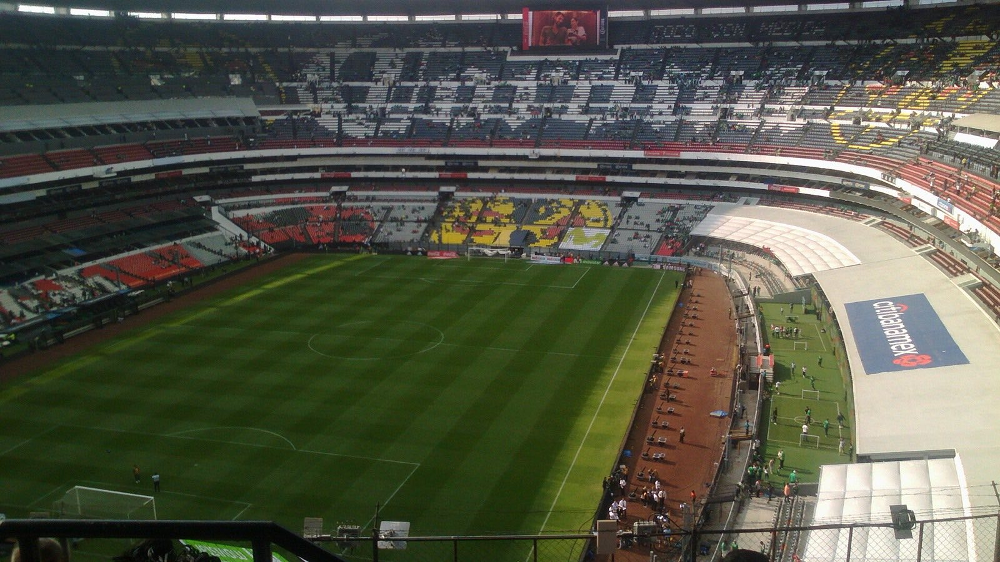

Colors. Memories.
A team's kit is part of its mythology. USMNT has worn the entire range from beloved-cult-classic to widely-mocked-disaster. Sometimes those were the same kit. A shirt can hold a whole summer. Explore the designs, then meet the navy number 4 that belongs to this story.
01 / THE SHIRT ROOM · 28 STUDIES
Same country.
Different identities.
Follow a motif across generations.
Choose two shirts. Make your case.
THE COLLECTION Scroll the rail, or use ← → on a shirt.
No shirts match both filters. Try another era or choose “Every identity.”
Original graphic study
Select Pattern or Collar to inspect the visual idea.
1994 Away · adidas
The denim one.
The denim away shirt belongs to the 1994 World Cup on home soil.
Official source & context ↗Secondary visual archive ↗Everyday American clothing, on the world stage. The big stars feel almost unruly against the denim-like field.
Large, scattered stars interrupt a soft blue field. Compare with 2026 Stars: the motif survives, but its contrast changes completely.
Your favorite stays in this browser. No sign-in.
START AN ARGUMENT
Same DNA. Different answers.
THE TWO-SHIRT TEST
Put them side by side.
OUR READ · THE DEBATE IS YOURS
EXPERIMENT / A kit is a visual argument. These original SVG studies isolate color, shape and pattern. They are not replicas: logos, exact fabric prints and construction are not reproduced. Era and edition come from historical context; identity filters and comparisons are our design interpretation. Favorites stay on this device.
THE ARCHIVE NOTES
Not every memory comes with a label.
The classics, in Gordon's words
1994 · Denim and stripes
The kit that built the cult. The denim away shirt, and its red-and-white striped counterpart, are the visual identity of 1994 in this site's soccer memory. Eric Wynalda, Tab Ramos, Alexi Lalas, Cobi Jones, Tony Meola.
2010 · The white sash
Clean, minimal, classic. The Donovan-vs-Algeria moment is the memory attached to this shirt here. The graphic study emphasizes its diagonal shape.
2014 · Bomb Pop
The shirt was beautiful. Blue, white and red blocks: the popsicle comparison is impossible to unsee. This is Gordon's kit appreciation, not a claim that everybody agreed.
2022 · White home
The shirt of the modern-era return to the World Cup. Pulisic's Iran goal and the Round of 16 run are the chapter this page remembers.
Two kit memories, now corrected
The earlier page recalled a “Don't Tread” shirt around 2010. The expanded research places that special shirt in 2006. The old “2018 hoops” recollection also blurred separate designs: the 2017 Gold Cup special and the 2018 next-generation collection now have their own entries and sources. The original recollections explain these corrections; they are not retained as kit identifications.
One shirt.
Two days at SoFi.
The #4, worn.
Fifty years of loving this game, compressed into one navy Nike shirt with a 4 on it. I wore it into SoFi twice in eight days. June 18 through Entry 12 to Andy's box, my first World Cup match ever. June 25 to the seats next to Pete for USA v Türkiye. Every other kit on this page belongs to the team. This one is ours. And that feels exactly right.
03 / THE 2026 DESIGN
Stars, stripes, and something inside.
U.S. Soccer and Nike unveiled the two designs on March 16. Players contributed feedback on fit, fabric and movement. An “Inner Pride” mark sits inside the collar, and bespoke Stars and Stripes typefaces give the collection its own lettering.
Two versions, different construction. The match jersey uses AERO-FIT and a raised silicone crest; the stadium version has a relaxed fit and an embroidered crest. The photos above document Gordon's own shirt and memories; they do not establish its retail model.
U.S. Soccer · official 2026 launch ↗
Kit launch facts reviewed October 6, 2026. Original personal writing: August 1, 2026.
The badge.
1995: The blue-and-red shield with stars on white. The badge we wore through the 2002 Quarterfinal and the 2009 Spain win.
2016: The simplified red, white, and blue waved-flag crest. Still in use. The badge we wore through 2022 Qatar and the Pochettino era.
The stars myth: You'll hear that stars above the crest count Gold Cup wins. Not true. The USMNT badge carries no trophy stars at all. (The USWNT wears four, one per World Cup title.)
